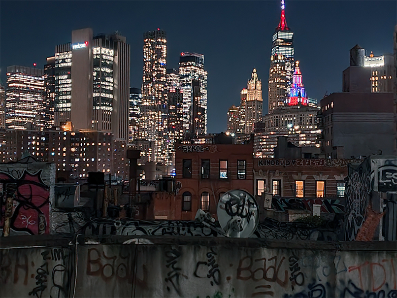

My New York Experience
I visited New York at the start of November ’23 for eleven days. I was alone, without plans to visit prominent museums or tourist attractions like the statue of liberty. Strolling through the endless streets, my mission was to absorb the feeling of New York, to understand what daily life in and around Manhattan is like and to capture some of it in my sketchbook.
Now the city is enormous and many of my sketches are left undone, but some of them you can see here on the left. I ventured into a different art style to fit the feeling of a fast metropolis better, with stark blacks and more graphic novel like characters.
Next to drawing what I saw, I began drawing what I could imagine happening in the city, too. The upper drawing of the art piece is based upon a view from the Manhattan Bridge walkway above Madison Street. This point is right in the middle of one of the less desired areas in Lower Manhattan, as it is squeezed between to incredibly loud and busy bridges, packed with social housing and old buildings in a state of disrepair.
I loved this part of the city as it shows the real circumstances of many New Yorkers with an income of less than $100.000 a year. Now that’s a lot under normal circumstances but in New York, it will leave you with a small apartment and little to spend next to food and rent. There’s a lot of diversity in little shops and rusty corners and gravity everywhere. On the streets you see one world, on the rooftops you see another. More desolate and full of machines, it creates a new landscape out of reach of the busy streets, with a spectacular view. I decided to use this reference loosely to create my own world, with elements of Bladerunner, while keeping the characters like everyday people.
While sitting in cafés drawing my sketches, I’ve had people come up to me asking if I’m a comic artist. Apparently, a lot of them live in New York. So I thought, maybe I should explore using the comic page setup as an artwork to add more storytelling to the scene I’m drawing.
Do you like it and want a high-quality copy on your wall?


